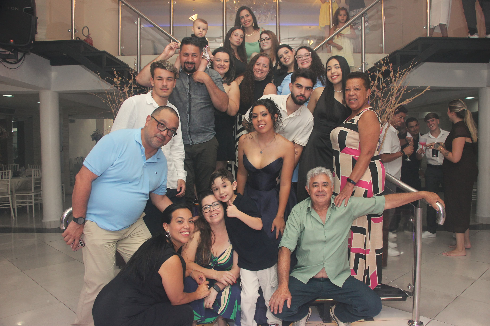
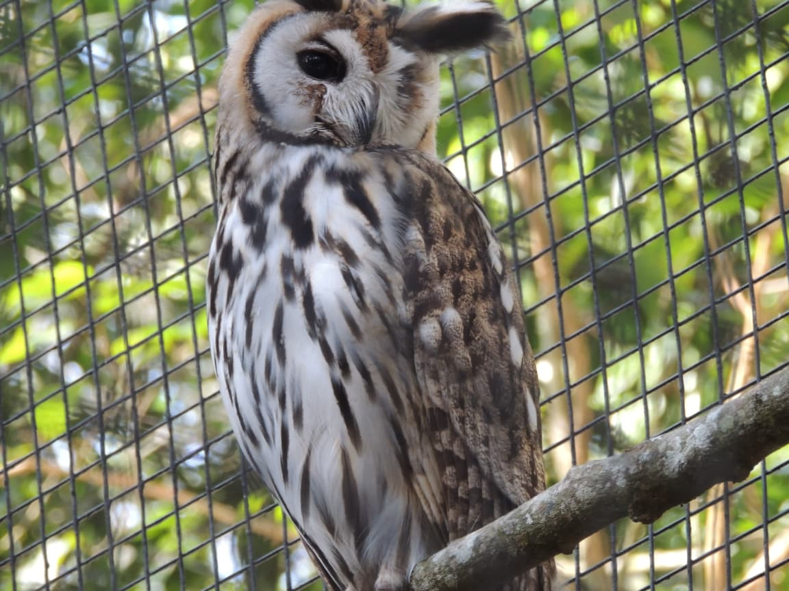
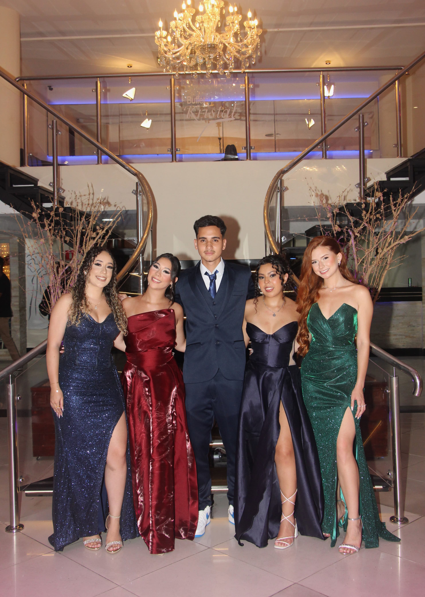
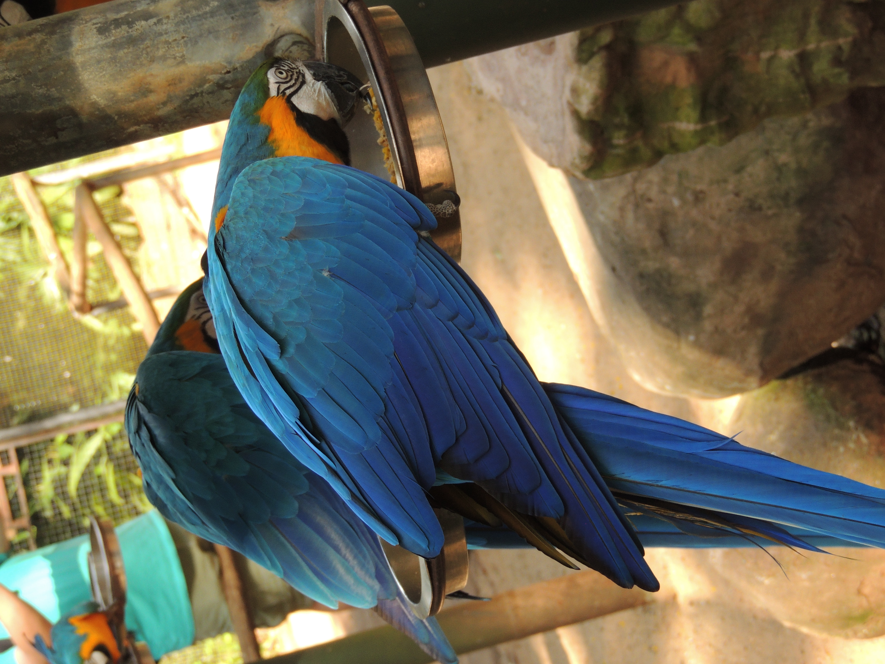
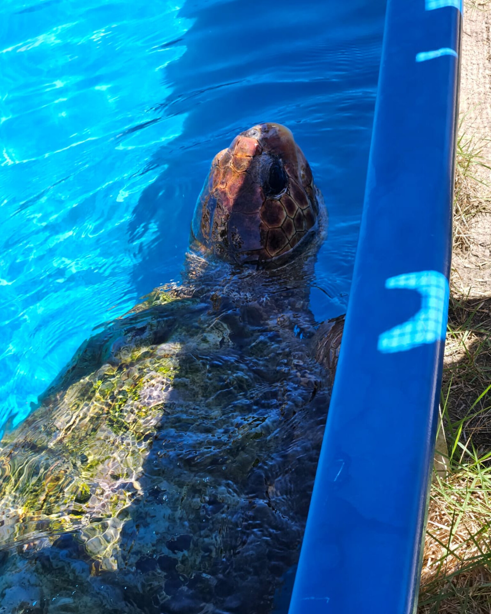
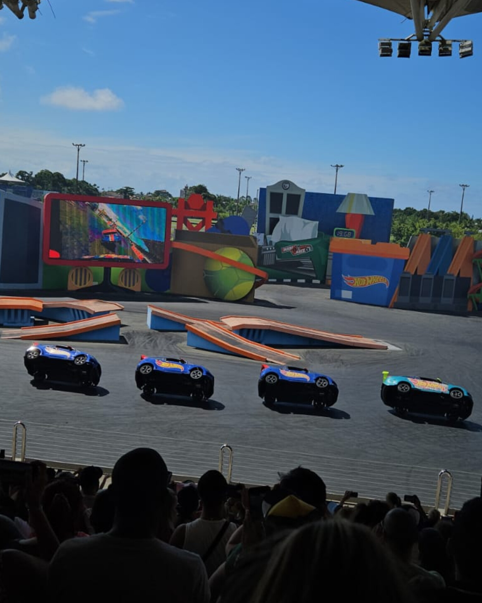
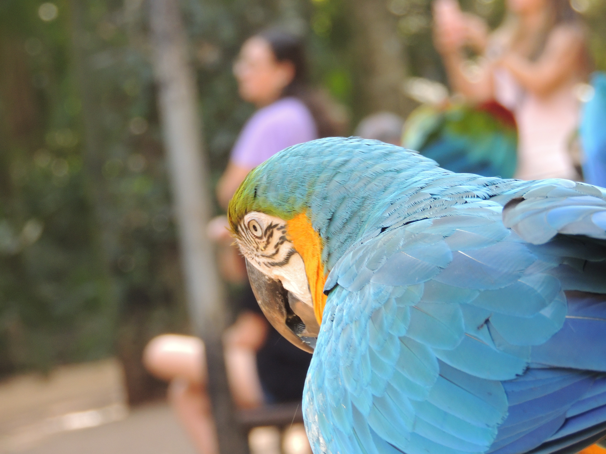

“Oda Frame – Memórias em Foco” é um espaço criado para acolher lembranças e dar sentido aos momentos vividos.
Mais do que imagens, cada registro carrega emoções, conexões e partes importantes da sua trajetória.
Aqui, as memórias deixam de estar dispersas e passam a existir com intenção,
valorizando aquilo que permanece: sentimentos, vínculos e experiências que ajudam a construir quem somos ao longo do tempo.
Fotografar é guardar não apenas lugares, mas sensações.
Cada registro carrega sensações, descobertas e histórias que
permanecem mesmo após o retorno, mantendo viva a essência de cada experiência.

A fotografia preserva os laços que nos acompanham ao longo da vida.
Em cada imagem, ficam guardados momentos de convivência, afeto e histórias
que ajudam a construir quem somos.
Mais do que registros, são lembranças que mantêm viva a conexão com aqueles
que fazem parte da nossa trajetória.
A fotografia transforma instantes simples em lembranças que permanecem
ao longo do tempo.
Cada imagem registra detalhes, emoções e situações que muitas vezes
passam despercebidos, mas que carregam significado. Mais do que registros,
são fragmentos da vida que ajudam a preservar a essência de cada experiência vivida.

Entre movimentos e silêncios, a fotografia captura a essência dos animais
e a harmonia presente na natureza.
Cada registro evidencia sua liberdade, força e delicadeza, transformando
instantes em memórias que despertam admiração e reflexão.

A fotografia eterniza momentos compartilhados entre amigos, transformando
instantes simples em lembranças duradouras.
Em cada imagem, ficam registrados risos, experiências e conexões que marcam
a trajetória de forma única.
Mais do que encontros, são memórias que reforçam vínculos e permanecem ao
longo do tempo.
fotografia registra a intensidade e a dedicação presentes no esporte.
Cada imagem captura esforço, superação e momentos que refletem disciplina
e determinação ao longo da jornada.
Mais do que movimentos, são lembranças que representam conquistas e a
evolução construída com o tempo.
Cada imagem carrega uma história única!
Adicione a sua e faça parte desse espaço de memórias que conectam experiências e sentimentos,
transformando lembranças em algo que pode ser revivido e valorizado.



